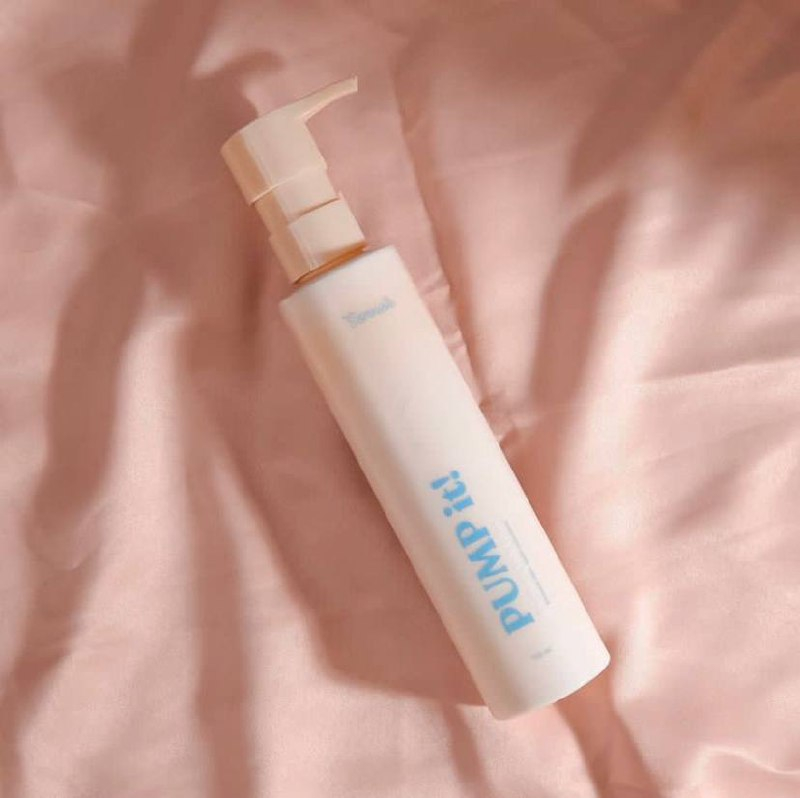
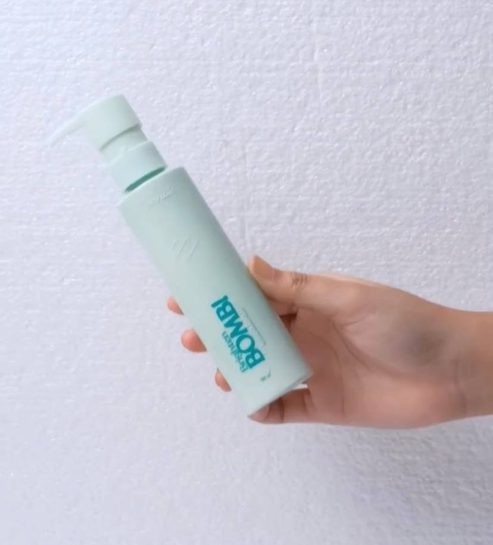

Perbedaan Body Lotion Somniate
Body lotion atau pelembab atau diformulasikan untuk melembabkan kulit. Penggunaannya dianjurkan untuk semua jenis kulit. Artinya pelembab tidak hanya digunakan untuk kulit kita yang kering, tapi juga untuk semua tipe kulit. Nah, somniate ini mengeluarkan body lotion dengan berbagai variant dan manfaat nya pun berbeda.
Berikut variant dan manfaat dari body lotion somniate:
1. PUMP! it
Somniate PUMP! it ini beraroma Vanilla Butter yang manis dan lembut. Dengan kandungan Niacinamide, Alpa Arbutin dan Licorice Extract nya dapat mecerahkan, melembabkan, dan menjaga elastisitas kulit. Body lotion ini berukuran 150ml. Cara pakainya dengan mengoleskan Somniate PUMP! it ke seluruh tubuh secara merata. Gunakan pada saat pagi hari dan malam hari untuk hasil yang maksimal. Manfaat dari PUMP! it ini untuk melembabkan kulit, mencerahkan kulit, dan melindungi matahari.
2. Brighten BOMB!
Somniate Brighten BOMB! merupakan body lotion dengan top based arpma woody, citrus, dan floral yang segar dan nyaman digunakan. Mengandung Niacinamide, Glutathione dan Vitamin E yang dapat mencerahkan dan melembabkan kulit. Serta memberikan tone up brightening. Body lotion ini berukuran 150ml. Cara pakainya dengan mengoleskan Somniate PUMP! it ke seluruh tubuh secara merata. Gunakan pada saat pagi hari dan malam hari untuk hasil yang maksimal. Manfaat dari Brighten BOMB! ini untuk Melembabkan kulit, mencerahkan kulit, dan melindungi matahari. Nah, itulah beberapa perbedaan body lotion dari Somniate yang bisa kalian coba untuk melindungi kulit dan menjaga kulit dari sinar UV. Semoga bisa membantu kalian yaahhh